X1312–X1353¶
Moses Intersections, Circumcircle Inverses, Wernau Points & Similicenters
Moses orthocentroidal-Euler intersections, circumcircle inverses, 1st and 2nd Wernau points (X1337, X1338), and similicenters of the circumcircle, nine-point circle, orthocentroidal circle, and Brocard circle.
X1312–X1353 (Moses Intersections, Circumcircle Inverses, Wernau Points & Similicenters) — 16 representative centers (from 42 in collection) constructed on acute reference triangle \((a, b, c) = (5, 6, 7)\) with unit baseline AB = \(1\).¶
X13121st MOSES INTERSECTION
For a list of harmonic conjugates, click Tables at the top of this page.
X13132nd MOSES INTERSECTION
X1313 = midpoint of X4 and X1114
X13143rd MOSES INTERSECTION
X1314 is a point of intersection of the Euler line and the incircle. For some obtuse triangles, this point is not in the real plane (specifically, for those a,b,c such that Q < 0).
X13154th MOSES INTERSECTION
X1315 is a point of intersection of the Euler line and the incircle. For some obtuse triangles, this point is not in the real plane (specifically, for those a,b,c such that Q < 0).
X13165th MOSES INTERSECTION
X1316 = X2452 + 2 X2453
X1317REFLECTION OF X11 IN X1
X1317 is the antipode of X11 on the incircle.
X1318ISOGONAL CONJUGATE OF X1317
X1318 is the isogonal conjugate of X1317.
X1319BEVAN-SCHRÖDER POINT
X1319 = circumcircle-inverse of X56
X1320ISOGONAL CONJUGATE OF X1319
X1320 is the isogonal conjugate of X1319.
X13211st YIU SQUARES PERSPECTOR
Let \(BB_{A}\)CAC be the external square on side BC, and define \(CC_{B}\)ABA and \(AA_{C}\)BCB cyclically. Let X = BCB∩CBC and X' = BAB∩CAC, and define Y, Z and Y', Z' cyclically. The lines AX, BY, CZ concur in X4, and the lines AX', BY', CZ' concur in X485. The lines XX', YY', ZZ' concur in X1321, as shown in
X13222nd YIU SQUARES PERSPECTOR
The construction of X1322 is like that of X1321, but using internally positioned squares. See the reference
X1323FLETCHER POINT
X1323 is the point of intersection of the line X1X7 and the trilinear polar of X7. These two lines are orthogonal.
X1324CIRCUMCIRCLE-INVERSE OF X10
X1324 is the circumcircle-inverse of X10.

X1325CIRCUMCIRCLE-INVERSE OF X21
X1325 is the circumcircle-inverse of X21.
X1326INVERSE-IN-CIRCUMCIRCLE OF X58
X1326 = circumcircle-inverse of X58
X1327ARCTAN(3) KIEPERT POINT
Let \(BB_{A}\)CAC be the external square on side BC, and define \(CC_{B}\)ABA and \(AA_{C}\)BCB cyclically. The lines ABBA, BCCB, CAAC form a triangle perspective to triangle ABC, and the perspector is X1327.
X1328ARCTAN(-3) KIEPERT POINT
The construction of X1328 is like that of X1327, but using internally positioned squares. See the reference
X1329COMPLEMENTARY CONJUGATE OF X1
X1329 = complement of X56
X1330ANTICOMPLEMENTARY CONJUGATE OF X1
X1330 = reflection of X1046 in X10
X1331ORTHOCORRESPONDENT OF X101
For the definition of orthocorrespondent, see the notes just before X1992.
X1332ORTHOCORRESPONDENT OF X100
For the definition of orthocorrespondent, see the notes just before X1992.
X1333POINT ALULA
X1333 = X31-cross conjugate of X58
X1334POINT ALYA
X1334 = crosssum of Xi and Xj for (i,j) = (7,57), (81,1014)
X1335{X1,X6}-HARMONIC CONJUGATE OF X1124
X1335 is the {X1,X6}-harmonic conjugate of X1124.
X1336ISOGONAL CONJUGATE OF X1335
X1336 is the isogonal conjugate of X1335.
X13371st WERNAU POINT
X1337 is the tangential of X15 on the Neuberg cubic.
X13382nd WERNAU POINT
Let A'BC be the internal equilateral triangle on side BC, and define CB'A and AC'B cyclically. Let (AB'C') be the circle passing through the points A, B', C', and define (BC'A') and (CA'B') cyclically. The three circles concur in X1338. For details, see X1337.
X1339NAGEL-SCHRÖDER POINT
Let NaNbNc be the extouch triangle of ABC; viz., Na is where the A-excircle meets line BC, and NaNbNc is the pedal triangle of X40. Let I = incenter of ABC. The circles (AIX’), (BIY’), (CIZ’) concur in two points: I and X1339. (Jean-Pierre Ehrmann, Hyacinthos #6545)
X1340INSIMILICENTER(CIRCUMCIRCLE, BROCARD CIRCLE)
X1340 is the insimilicenter(circumcircle, Brocard circle).
X1341EXSIMILICENTER(CIRCUMCIRCLE, BROCARD CIRCLE)
X1341 is the exsimilicenter(circumcircle, Brocard circle).
X1342INSIMILICENTER(CIRCUMCIRCLE, 1stLEMOINE CIRCLE)
X1342 is the insimilicenter(circumcircle, 1stlemoine circle).
X1343EXSIMILICENTER(CIRCUMCIRCLE, 1stLEMOINE CIRCLE)
X1343 is the exsimilicenter(circumcircle, 1stlemoine circle).
X1344INSIMILICENTER(CIRCUMCIRCLE, ORTHOCENTROIDAL CIRCLE)
X1344 is the insimilicenter(circumcircle, orthocentroidal circle).
X1345EXSIMILICENTER(CIRCUMCIRCLE, ORTHOCENTROIDAL CIRCLE)
X1345 is the exsimilicenter(circumcircle, orthocentroidal circle).
X1346INSIMILICENTER(NINE-POINT CIRCLE, ORTHOCENTROIDAL CIRCLE)
X1346 is the insimilicenter(nine-point circle, orthocentroidal circle).
X1347EXSIMILICENTER(NINE-POINT CIRCLE, ORTHOCENTROIDAL CIRCLE)
X1347 is the exsimilicenter(nine-point circle, orthocentroidal circle).
X1348INSIMILICENTER(NINE-POINT CIRCLE, BROCARD CIRCLE)
X1348 is the insimilicenter(nine-point circle, Brocard circle).
X1349EXSIMILICENTER(NINE-POINT CIRCLE, BROCARD CIRCLE)
X1349 is the exsimilicenter(nine-point circle, Brocard circle).
X1350REFLECTION OF X6 IN X3
X1350 is the reflection of X6 in X3.
X1351REFLECTION OF X3 IN X6
X1351 is the reflection of X3 in X6.
X1352REFLECTION OF X6 IN X5
X1352 is the reflection of X6 in X5.
X1353REFLECTION OF X5 IN X6
X1353 is the reflection of X5 in X6.